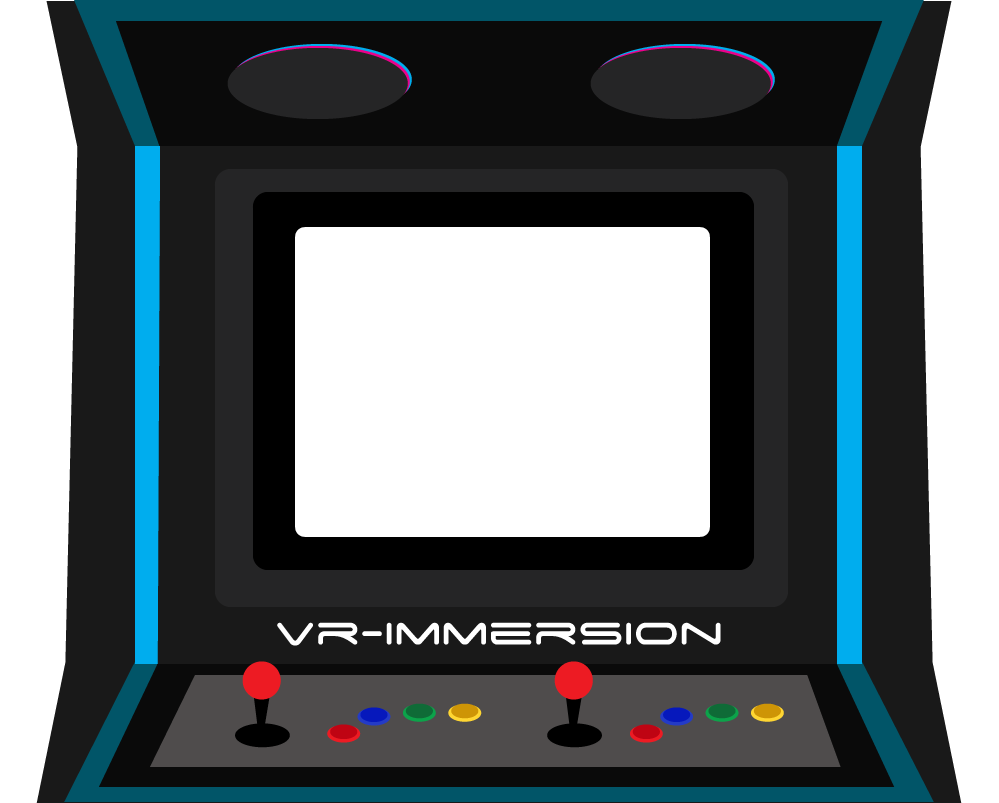

Présentation
Le retrogaming, parfois francisé en rétrogaming, est l'activité qui consiste à jouer à des jeux vidéo
anciens ou à les collectionner. Il concerne les jeux sortis sur les consoles de jeu, les
micro-ordinateurs,
les bornes d'arcades ou les jeux dits « électroniques ».
En raison de l'histoire encore brève du jeu vidéo, le retrogaming est une activité très récente.
Malgré
les
difficultés de définition, on désigne généralement par jeux vidéo « anciens », les jeux vidéo sortis
pendant
les quatre premières générations de consoles de jeux, soit depuis le début des années 1970 jusqu'au
milieu
des années 1990, période où les productions étaient très majoritairement en 2D.
En raison des difficultés à jouer à d'anciens jeux et du développement de l'internet grand public,
la
pratique des jeux anciens s'est développée sur les PC modernes via la création d'émulateurs
d'anciennes
plates-formes, et la diffusion de jeux abandonnés. Pour toucher le public des « joueurs nostalgiques
»,
plusieurs éditeurs publient d'anciens jeux à succès sur des machines récentes dans des portages ou
des
compilations1.

histoire
Les débuts du retrogaming ne sont pas datés avec précision. Pour certains auteurs, c’est dans la
deuxième
partie des années 1980 que les jeux vidéos connaissent une mode revival, à l’image de ce qui est
alors
constaté dans la production musicale. Cela donne des jeux comme Pac-Mania, développé et produit par
Namco, réédition en 3D isométrique du célèbre jeu vidéo Pac-Man de Namco. Le jeu est très semblable
à
son aîné de huit ans mais le joueur peut désormais se sortir de situations périlleuses en sautant
par-dessus les ennemis comme dans un jeu de plates-formes. La même année, Namco joue à nouveau de la
nostalgie des anciens joueurs avec le jeu d'arcade Galaga '88, évoquant Space Invaders (sorti en
1978),
Galaxian (1979), ou encore Galaga (1981)9.
Pour une autre experte, citée par le journal Le Monde, « ce phénomène correspond à l’arrivée à l’âge
de
la quarantaine de la génération X, née entre 1966 et 1976. Elle a vécu l’arrivée des premières
consoles
et des premiers PC familiaux : Nintendo, Neo Geo, Atari 520, Commodore 64, Amiga, Sega Megadrive… »,
et
a gardé une nostalgie de cette époque des jeux vidéo10.
Une des grandes ruptures dans l’histoire des jeux vidéo date de 1995, avec le succès de la
PlayStation
de Sony et des autres consoles de jeux vidéo de cinquième génération adoptant des jeux entièrement
en
3D. Alors qu'à de rares exceptions près, les jeux vidéo demeuraient en 2D à défilement (ou
scrolling)
horizontal, vertical ou multidirectionnel, la puissance des processeurs 32 ou 64 bits permettent de
créer des décors de jeux en 3D temps réel texturés.
Les jeux en 3D subjective marquent une transition du retrogaming vers le modern gaming.
Les jeux sont dès lors en 3D, entrecoupés de scènes cinématiques ou de films interactifs grâce au
support CD-ROM ou DVD-ROM qui permet un stockage sur plusieurs centaines de mégaoctets contre
quelques-uns tout au plus pour le support cartouche.
L’engouement pour le retrogaming est constaté notamment au Japon au milieu des années 2000. Ainsi,
en
2006, Nintendo, exploitant les souvenirs des joueurs autour des vingt ans de la création de Mario
(le
personnage créé par Shigeru Miyamoto)11, propose un retour aux sources de la série en sortant sur DS
le
premier Super Mario en 2D depuis Super Mario Land 2, sorti en 1992, baptisé New Super Mario Bros..
Le
succès est au rendez-vous, et ce retour aux sources devient l'un des jeux les plus vendus de tous
les
temps12.
En 2006 toujours, la plate-forme de téléchargement Console virtuelle de Nintendo sur Wii permet aux
nostalgiques de retrouver les titres de leur enfance et aux plus jeunes joueurs de s'essayer aux
jeux
d'antan, grâce à un système d'émulation des consoles NES, SNES, Nintendo 64, Master System, Mega
Drive,
PC-Engine, Neo-Geo AES, et du micro-ordinateur Commodore 6413.
En 2007, Geometry Wars: Galaxies, développé par Bizarre Creations et Kuju Entertainment, édité par
Sierra Entertainment, sort sur les consoles Wii et Nintendo DS. Ce jeu est un shoot them up
multidirectionnel de type manic shooter au style graphique et sonore volontairement épuré (formes
géométriques, peu de couleurs, bruitages et musiques simplistes) mais au gameplay addictif. Il
renoue
avec la tradition du hi-score en tant que finalité du jeu. À l'origine mini-jeu intégré à Project
Gotham
Racing 2 en 2003, publié en version complète sous le titre Geometry Wars: Retro Evolved sur le Xbox
Live
Arcade en 2005 où il connaît un immense succès, adapté sur téléphone mobile, sa sortie bien
accueillie14
sur les consoles Nintendo montre la viabilité des jeux aux concepts les plus rétro.
En 2008, SNK Playmore commercialise le premier volume de la série SNK Arcade Classics qui permet aux
joueurs de retrouver les premiers grands classiques de la Neo-Geo.
La même année, Mega Man 9 est disponible sur le service de téléchargement numérique de la Wii
(WiiWare),
le PlayStation Store et le Xbox Live Arcade. Ce neuvième volet de la série Mega Man revient au style
8-bit des premiers épisodes sortis sur NES. Keiji Inafune, producteur et game designer de Mega Man
depuis l'origine, a lui-même signé les designs de plusieurs boss, il justifie le choix des
limitations
graphiques et sonores au standard 8-bit par le désir de revenir aux fondamentaux de la série
classique
et de suivre la mode du retrogaming.
Onze ans plus tard, en 2019, Nintendo met encore des jeux rétros en vedette avec l'abonnement
Nintendo
Switch Online sur ses dernières consoles, la Nintendo Switch et la Nintendo Switch Lite, qui offrent
des
jeux gratuits de NES et de SNES15. Cependant, ces jeux ne sont pas très nombreux et la Nintendo
Switch
ne propose pas d'autres jeux vidéo sur ces anciennes consoles sur le Nintendo eShop, contrairement à
ses
prédécesseurs, la Wii et la Wii U